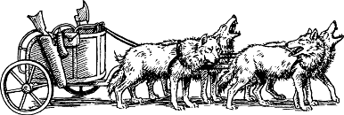

318
You follow the stocky Drodarin warrior out of the great hall and along a passageway that leads to the entrance of a vast, lantern-lit tunnel. Four large wolves are harnessed to a chariot parked alongside the tunnel wall, and these great grey beasts whine excitedly when they see Vagel appear. The captain leaps into the chariot and beckons you to join him. As soon as you are safely aboard, he grabs the wide leather reins and sets the wolves running. 8
{kind=link}

Tenaciously you cling to the chariot’s rail as Vagel hurls his two-wheeled transport through a seemingly endless succession of titanic caverns, and you marvel at the scale and diversity of this subterranean kingdom, for it is far greater than you had ever imagined possible. You see farmsteads with cattle and crops, rivers laden with fish, mines rich with silver and rare minerals, and wells brimming with oil to fuel the great lanterns of this vast underground realm. But among the many wonders of Bor you also see some of the tragedy that has befallen the Drodarin race. Many of the dwellings you pass have been destroyed or abandoned, and groups of battle-weary dwarf warriors sit huddled and dejected in their ruins, nursing their wounds.
Beyond the smoking shell of a house, you arrive at the entrance to a sloping tunnel that descends to a quarry and copper mine. The site looks abandoned, but when you emerge from the tunnel, your Magnakai Discipline of Pathsmanship screams a warning that you are heading into an ambush. You shout at Vagel to turn the chariot about, but before he can obey your command, a volley of arrows whistle down from the surrounding rocks. One of the wolves is killed instantly, causing the chariot to swerve out of control. Then the left wheel shatters upon hitting a boulder, and in the blink of an eye you are sent tumbling headlong through the air.
Pick a number from the Random Number Table. If you possess Grand Huntmastery, add 2 to the number you have picked.
If your total score is now 3 or lower, turn to 286.
If it is 4–7, turn to 120.
If it is 8 or higher, turn to 85.
Footnotes
[8] From here on, you will be underground, so if you possess the Kai Weapon ‘Illuminatus’, you will benefit from its unique properties (you may add 7 to your COMBAT SKILL instead of 5).